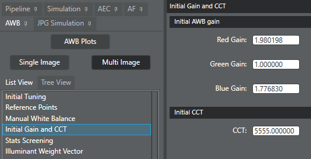
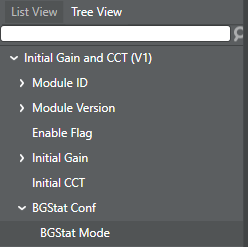
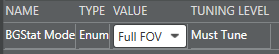

Use this procedure to update the initial AWB gain values after initial tuning.
-
Click the AWB tab.
-
To tune the initial gain and initial CCT parameters, do the following:
-
From the List View tab, select
Initial Gain and CCT.

-
Tune the initial gain values and initial CCT, as needed.
-
To tune the BG stats config mode, do the following:
-
From the Tree View tab, select .

-
In the right pane, select the appropriate BGStat Mode value from the
list.

-
Click .